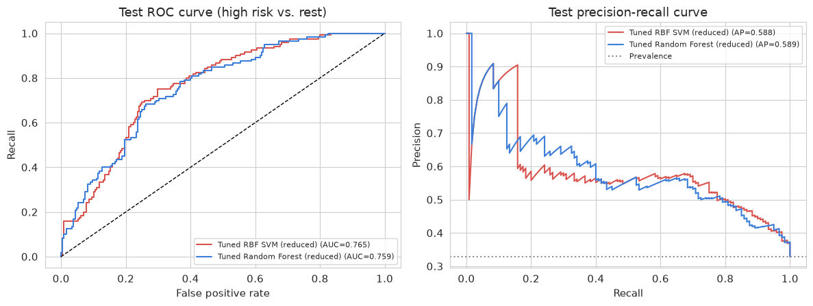
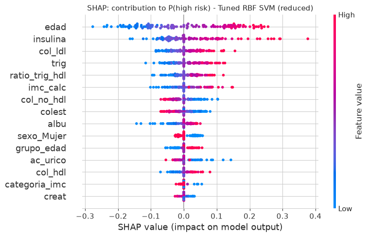
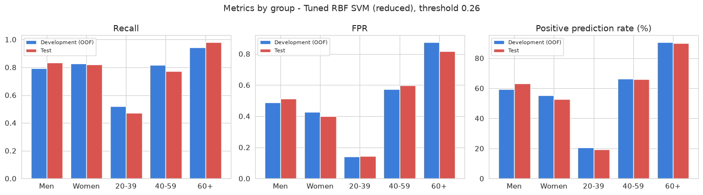

Machine Learning
Diabetes risk in Mexican patients
A model that ranks patients by how likely they are to be high-risk, so clinics can decide who gets a confirmatory test first, without relying on glucose or HbA1c.
- Type
- Academic project, 2026
- Data
- 2,549 adults from 2,055 households
- Final model
- SVM with an RBF kernel
- Stack
- Python, scikit-learn, SHAP

The problem
In many public health programs, confirmatory diabetes tests are a limited resource. The idea was to use data that's often already on file (age, sex, weight, height, lipids, insulin and uric acid) to decide who should be seen first.
The model doesn't diagnose anyone. Its output is always reviewed by healthcare staff.
Data without leakage
I worked with 24 variables from a national health survey in the style of ENSANUT, Mexico's National Health and Nutrition Survey. Glucose and HbA1c were left out on purpose: the target was built from them, so including them would make the model look perfect on paper and useless in practice.
I also tracked down sentinel values (a weight of 222.22 repeated across records, for example) that were producing impossible BMIs, and cleaned them up.
Validation by household
People in the same family share habits, so I never split a household between training and test data. I used StratifiedGroupKFold grouped by household, with repeated cross-validation (15 evaluations), and held out a 365-patient test set that I used exactly once, at the very end.
Models compared
| Model | ROC-AUC (cross-validation) |
|---|---|
| RBF SVM (final) | 0.764 |
| Random Forest | 0.756 |
| Linear SVM | 0.752 |
| Gradient Boosting | 0.746 |
| Logistic regression | 0.723 |
| Neural network (MLP) | 0.720 |
| Decision tree | 0.674 |
| Baseline (Dummy) | 0.505 |
I tuned hyperparameters with GridSearchCV and RandomizedSearchCV, and picked the final model with a weighted decision matrix (recall, precision, stability, interpretability and cost) instead of simply taking the top score.
Result
82.5%
of high-risk patients caught in the test set (99 out of 120), with an ROC-AUC of 0.765. The decision threshold (0.26) was set to guarantee a recall of at least 0.80, because in healthcare a missed case costs far more than one extra test.
What the model learned

Bias and limitations
Performance holds steady across sex (recall of 0.83 for men and 0.82 for women), but drops to 0.47 for adults aged 20 to 39, where high risk is less common. I documented this in the model card as a limitation healthcare staff need to keep in mind.

Ready for use
- A full serialized pipeline with an integrity check (SHA-256).
- An inference script that validates its inputs: missing fields, wrong types and out-of-range values.
- A monitoring plan that uses PSI to detect shifts in the patient population.
- A model card covering intended uses, risks and when to retrain.
Resources
Technical report (PDF) View code on GitHub
The report walks through every decision in the project with its tables and figures, and points to the notebook section that produces each result.